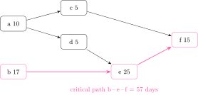

Method
CPM requires: the list of activities (from the WBS), estimated durations, dependencies (a directed graph, drawn as arrow diagram or activity-on-node). For each node: EST (earliest start), EFT (earliest finish), LST (latest start), LFT (latest finish), D (duration), F (float).
- Forward pass: , .
- Backward pass from the project end: , .
- .
Critical path: the sequence with the longest total duration; zero float; any delay on it delays the project.
Worked example
KM system for an insurer (dependencies: a→c, a→d; b→e; d→e; c→f; e→f):
| Act. | Description | D | EST | EFT | LST | LFT | Float |
|---|---|---|---|---|---|---|---|
| a | form and train user group | 10 | 0 | 10 | 2 | 12 | 2 |
| b | install systems | 17 | 0 | 17 | 0 | 17 | 0 |
| c | specify sales training | 5 | 10 | 15 | 37 | 42 | 27 |
| d | design initial screen interface | 5 | 10 | 15 | 12 | 17 | 2 |
| e | test interface in pilot area | 25 | 17 | 42 | 17 | 42 | 0 |
| f | modify interface | 15 | 42 | 57 | 42 | 57 | 0 |
Forward: e starts at max(b 17, d 15) = 17; f at max(c 15, e 42) = 42; end 57. Backward: d must finish by e's LST 17 → LST 12; a must finish by min(c 37, d 12) = 12 → LST 2. Critical path b → e → f = 57 days. Activity c can slip 27 days; a and d share 2 days of float (using it on a consumes d's).
Small case: A(3) → B(4), A → C(2), B and C → D(1): critical A–B–D = 8 days, C has 2 days float; if C grows to 5, A–C–D (9 days) becomes critical.
Float and resource levelling
Float lets non-critical activities move to smooth resource peaks: in the KM example, delaying c within its 27-day float removes a peak in resource demand without changing the end date.
Crashing
Shorten duration by adding resources, typically on critical activities. Marginal cost rises: each further week costs more. Method: crash the critical activity with the lowest cost slope (EUR per week saved), recompute — another path may become critical — and stop when cost exceeds the benefit of earlier completion. Some activities cannot be accelerated by adding people.
Pitfall
Shortening a non-critical activity does not shorten the project. Float belongs to a path, not to one activity. CPM assumes fixed durations and unlimited resources.
Recall
Run forward and backward passes on the KM network; name the critical path; explain float sharing between a and d; define crashing and cost slope.
Picture

The magenta path has zero float; c alone can slip 27 days.